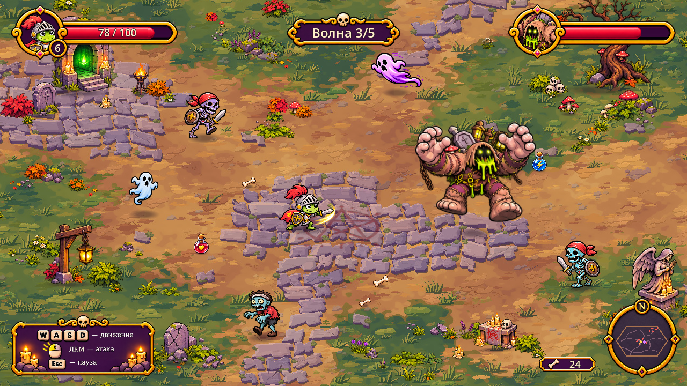
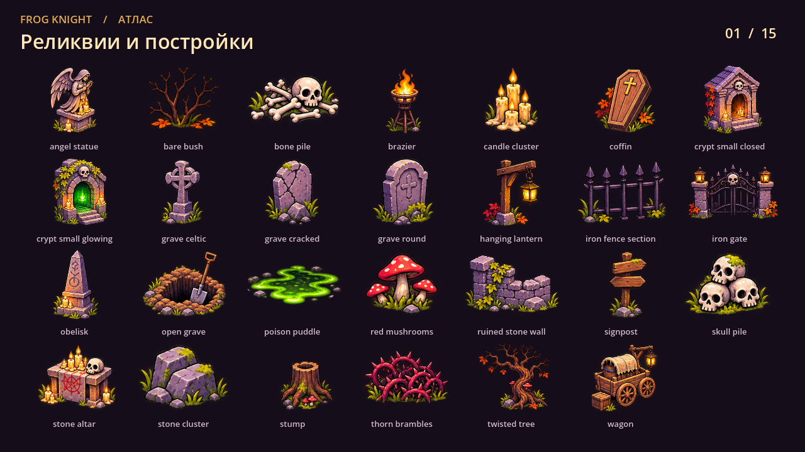

Полевые записи / Арена 01
От открытого центра до кованой ограды. Два вида одной карты в игровом масштабе, а ниже — портреты и движения её обитателей.

game/arena.tscn
Полевые записи / Лист 02
12 персонажей · 62 анимации. Выберите обитателя и движение. Для сравнения одиночные действия можно повторять.
Открыть этот кадр в PNG ↗
Полевые записи / Лист 03
